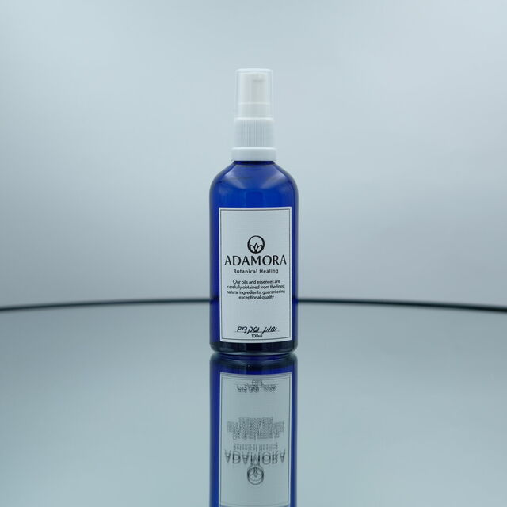
שמן לניקוי והזנת הפנים100 ml
שמן שקדים בכבישה קרה, עשיר ברכיבים המספקים הזנה ולחות. מתאים גם להורדת איפור.
עוד
מתאים לכל סוגי העור ומומלץ לטיפול במצבי אקנה ועור רגיש ומגורה.
משחות, שמנים, קרמים ומארזים שאני רוקחת בעבודת יד.
מכיוון שכל המוצרים נרקחים מחומרים טבעיים, צמחי מרפא ושמנים אתריים פעילים, חשוב לי לוודא שמה שאת בוחרת מתאים בדיוק לעור שלך, למצבך (היריון, רגישויות) ולצרכים שלך. הרכישה מתבצעת בשיחה אישית בוואטסאפ – שלחי לי הודעה עם המוצר או המארז שאהבת, ונתאים אותו עבורך.
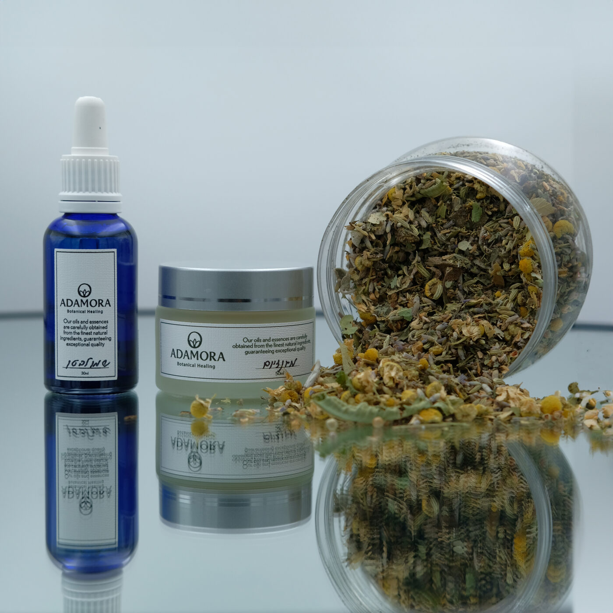
25 מוצרים, בשלוש קבוצות: לפנים ולעור · לגוף ולנפש · למבער. למטה — שלוש ערכות טיפוליות וארבעה מארזי מתנה.
בכל כרטיס תיאור קצר. בלחיצה על ״עוד״ — הפירוט המלא והאזהרות.
להזמנה או לשאלה — בוואטסאפ.

שמן שקדים בכבישה קרה, עשיר ברכיבים המספקים הזנה ולחות. מתאים גם להורדת איפור.
מתאים לכל סוגי העור ומומלץ לטיפול במצבי אקנה ועור רגיש ומגורה.
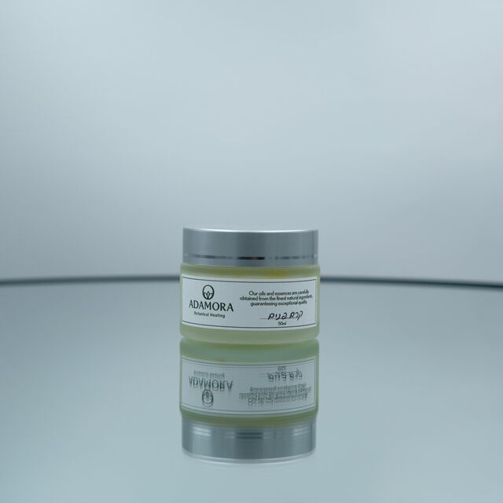
קרם פנים ארומתרפי עשיר בשמנים ייחודיים ומזינים, בעל פעילות אנטי־אייג׳ינג.
מגיע בקומבינציית שמנים נבחרת או בהתאמה אישית. מומלץ לכל סוגי העור, פעמיים ביום לאחר ניקוי הפנים בשמן שקדים. *יש להפריד שימוש מתכשירי קוסמטיקה אחרים*
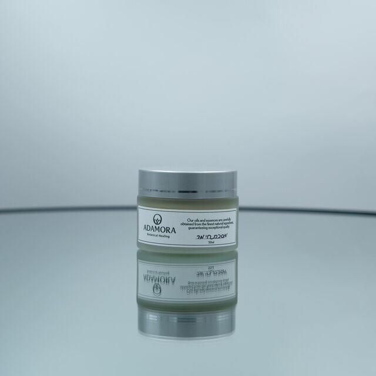
מסכת חימר טיפולית ומזינה מבוססת חימר ירוק. מומלצת לטיפול באקנה.
לשימוש חיצוני במריחה על העור, פעם בשבוע עד 15 דק׳ על עור נקי. מתאימה גם לטיפול באיחוי שברים ונקעים – מריחה והמתנה עד לייבוש. *מכיל שמן אבוקדו*
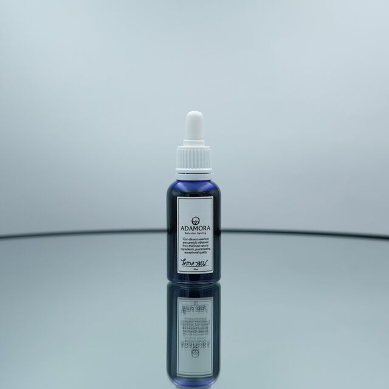
מי פנים טבעיים לחיטוי ואיזון – להרגעת מצבי עור שונים, ביניהם אקנה.
תערובת מתאימה במריחה חיצונית ובבליעה. מריחה חיצונית – לחיטוי והרגעת מצבי עור, ביניהם אקנה ומצבים ויראליים על פני העור. בליעה – טיפול במצבים ויראליים, הרגעה וטיפול בחרדה (בשימוש קבוע). *יש למהול כפית חומץ בכוס מים לפני השימוש* *יש להיוועץ בנוגע לשימוש פנימי / מריחה חיצונית* *יש לנקוט זהירות בשימוש עם ילדים קטנים*
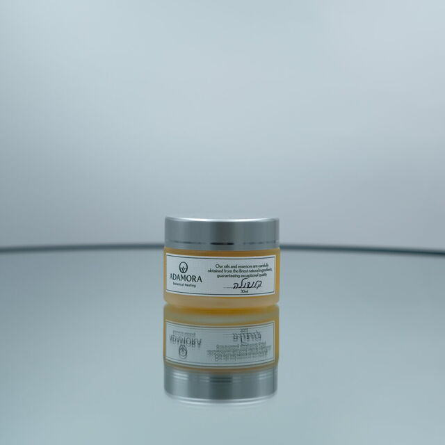
משחת עזרה ראשונה טבעית, חובה בכל בית (נקראת גם ״משחת הקסם״). עדינה ומתאימה לתינוקות ולעור רגיש.
צמח הקלנדולה ידוע ביכולתו להרגיע ולהזין את העור ולתמוך במצבים הבאים – תפרחת חיתולים, אדמומיות, גרד, פצעים בעור, אטופיק דרמטיטיס, פריחות חיצוניות, עקיצות, כוויות, חתכים…
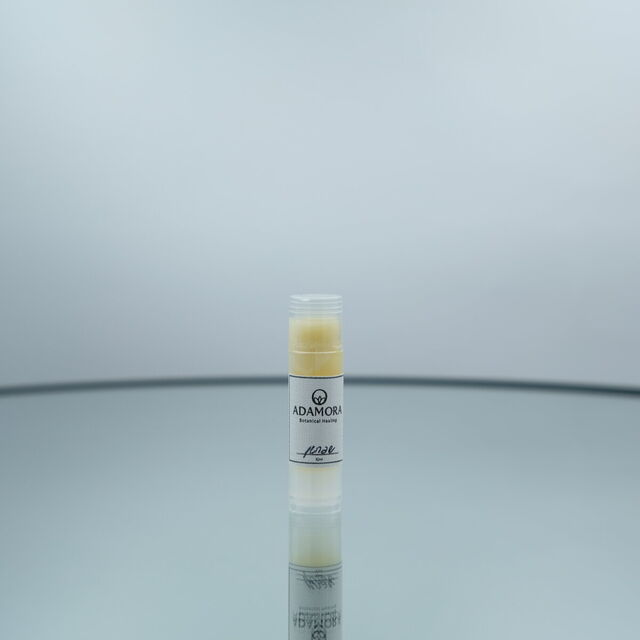
שפתון לחות והזנה מבוסס שמנים וחמאות מחומרי גלם טבעיים, בניחוח לבנדר ותפוז.
*אזהרה: מכיל שמן אבוקדו*
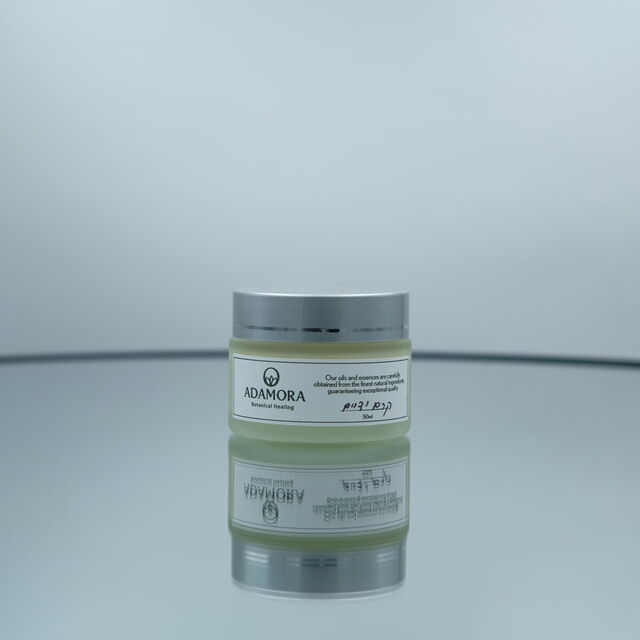
קרם ידיים ארומתרפי עשיר בשמנים ייחודיים, בעל פעילות משקמת ומזינה את העור.
מגיע בקומבינציית שמנים נבחרת או בהתאמה אישית. מומלץ לכל סוגי העור. *יש להפריד שימוש מתכשירי קוסמטיקה אחרים*
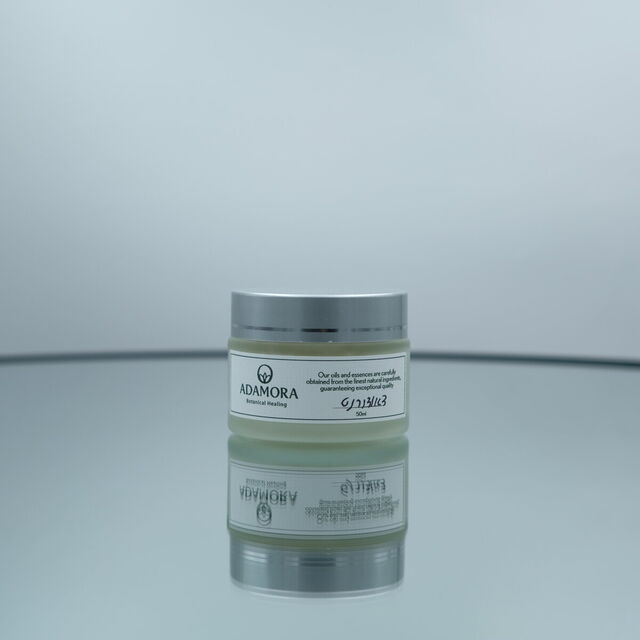
דאודורנט טבעי מבוסס מגנזיום, חמאות ושמנים טבעיים, בניחוח נעים ועדין. מתאים לנשים ולגברים.
בשימוש קבוע מאזן ומשפר את ריח הזיעה. אופן השימוש – מריחת הקרם בבתי השחי. *לא מכיל סודה לשתייה / אלומיניום אשר מגרים את העור* *לא מונע יציאת זיעה ולא סותם נקבוביות*
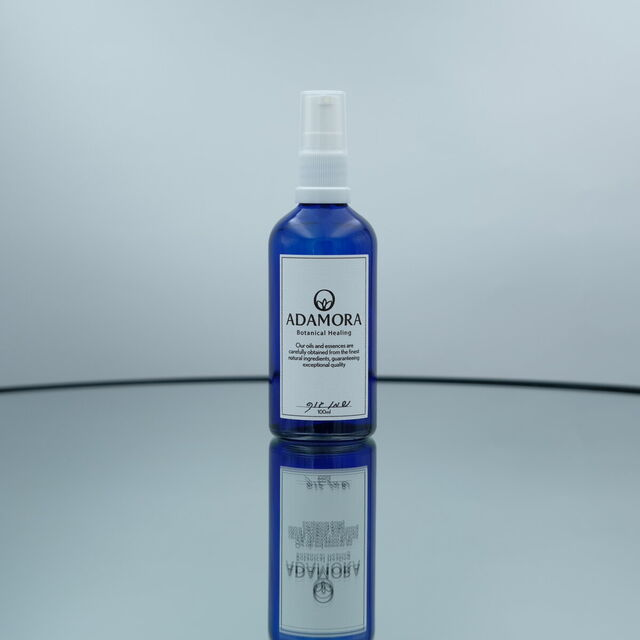
שמן גוף מעניק לחות והזנה לעור, מתאים לשימוש בסוף המקלחת.
מגיע בניחוחות משתנים לבחירה אישית – לבנדר־תפוז · לבנדר־פטשולי · וניל־פטשולי.
מלח ים אטלנטי ופרחי לבנדר יבשים – להרגעה בסוף היום, באמבט או באמבט רגליים.
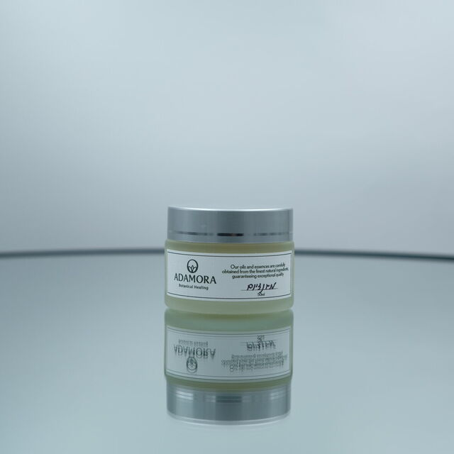
קרם עשיר במינרל מגנזיום ושמנים אתריים – להתכווצויות שרירים, כאבי מחזור וקשיי הירדמות.
מצוין לטיפול בהתכווצויות שרירים, כאבי שרירים, כאבי בטן, כאבי מחזור, חסרי מגנזיום בגוף, קשיי הירדמות בשינה, מעי רגיז. במריחה חיצונית על העור בעת הצורך. *השימוש אסור בתינוקות ופעוטות, במצבי תת פעילות בלוטת התריס*
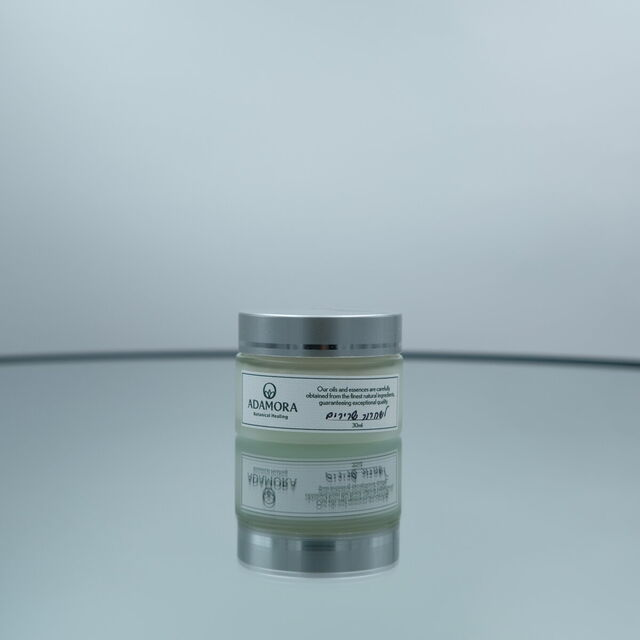
משחה מבוססת ג׳ל אלוורה שנספג בקלות – מצוינת להתכווצויות ולכאבי שרירים.
*השימוש אסור בתינוקות ופעוטות, במצבי תת פעילות בלוטת התריס, בעת נטילת תרופות פסיכיאטריות מסוג SSRI / תרופות לסוכרת (מלבד אינסולין)*
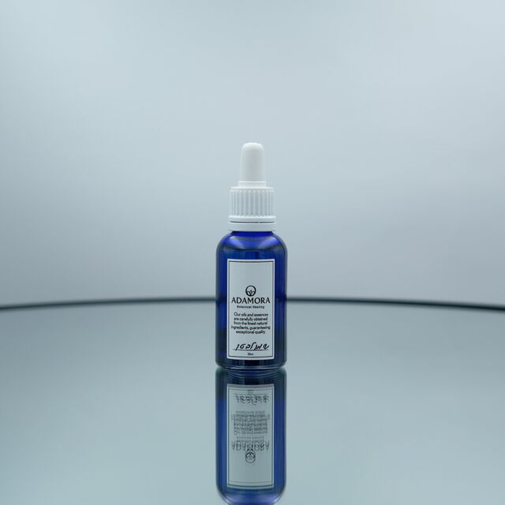
שמן נוגד עוויתות למערכת העיכול – לכאבי בטן, גזים, מעי רגיש, כאבי מחזור ותסמונת קדם־וסתית.
מתאים לכאבי בטן, עוויתות, גזים, אי נוחות בטנית, מעי רגיש, כאבי רחם, כאבי ווסת, תסמונת קדם־וסתית ועוד. *השמן אסור לשימוש בתת פעילות בלוטת התריס*
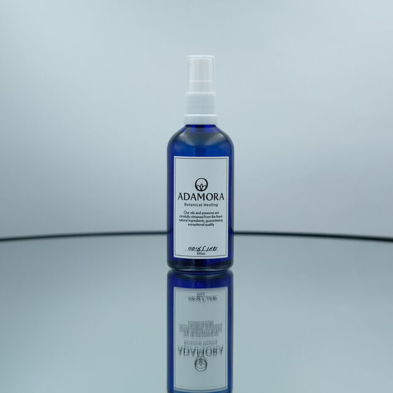
שמן מפנק לעיסוי, מבוסס שמנים אתריים בעלי ניחוח משכר – פלפל שחור, ורד, ילנג ילנג, וניל, פטשולי ועוד.
*השמן אסור לשימוש בתת פעילות בלוטת התריס*
תערובת שמנים ייחודיים שמתאימה לתינוקות מגיל לידה, על בסיס שמן שקדים בכבישה קרה.
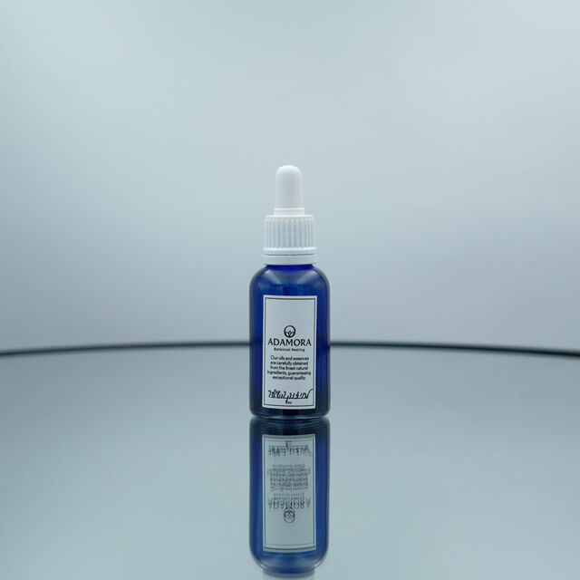
תערובת שמנים ארומתרפיים איכותיים לחיזוק השיער והשורשים.
מספק הזנה לשיער ומחזק את השורשים. טוב לטיפול בנשירת שיער, חולשת שיער, קשקשים… *אסור לשימוש בזמן הריון והנקה, פעוטות ותינוקות, באפילפסיה*
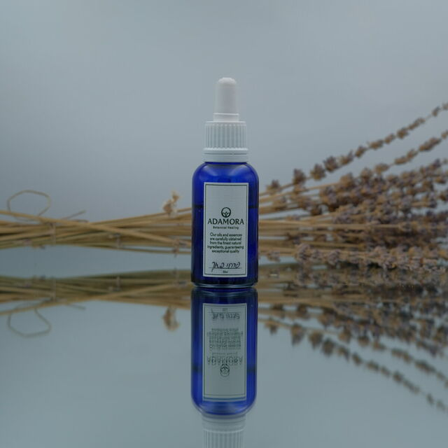
תמציות צמחים הומיאופתיות מאנגליה לטיפולי גוף־נפש. שתי תמציות מוכנות: ״טיפת שלווה״ למתח ושינה, ״נוכחות״ לריכוז.
משמשות במצבים שונים כגון חרדה, מתח, מחשבות טורדניות, פחד, חוסר ביטחון, חוסר ודאות ועוד. התמצית מתאימה לשימוש יומיומי ודורשת חידוש והתאמה בכל 3–4 שבועות. ניתן להשתמש בתמצית מגיל 0 בכל המצבים הרפואיים.
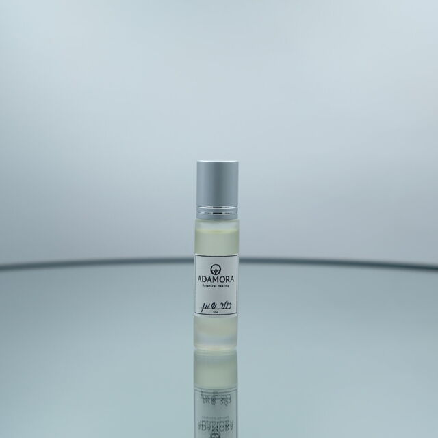
תערובות שמנים אתריים טהורים על בסיס שמן חוחובה אורגני – למריחה על נקודות הדופק, לשינוי תדר ולתמיכה יומיומית.
תחליף טבעי לבושם, קל לנשיאה בתיק.
מגיע בריחות משתנים לבחירה – לבנדר־פטשולי · ילנג ילנג ולבונה · תפוז מתוק וורד.
בקבוקון מלח הרחה עם שמנים אתריים, מותאם אישית – להרגעה, חרדה, ריכוז והרמת אנרגיה.
מתאים לטיפול בילדים ולאנשים שפחות מתחברים למריחה על פני העור. צריך לחדש בכל 3–4 שבועות. *לא מתאים לפעוטות ותינוקות*
עץ קדוש לטיהור המרחב מאנרגיות עומדות והשריית אווירה נינוחה.
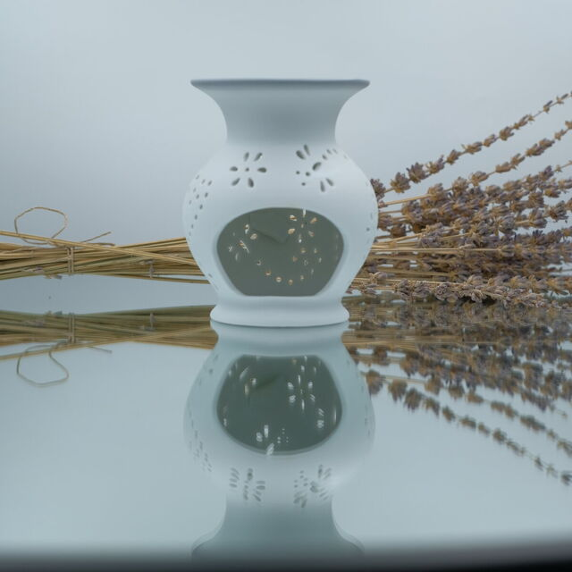
מבער שמנים מקרמיקה, מגיע בדגמים וצבעים משתנים לבחירה.
בקניית שמן אתרי או תערובת שמנים אתריים למבער, תינתן הנחה של 15% על המבער.
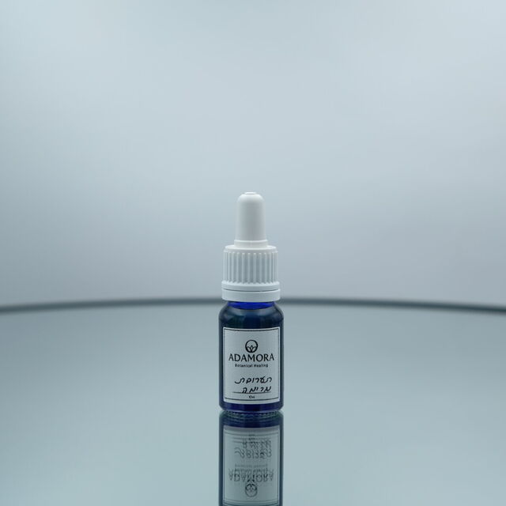
תערובת שמנים אתריים טהורים למבער – ללמידה, עבודה, עייפות, מצב רוח ירוד, חולי והצטננות ולטיהור חלל החדר.
*השימוש הישיר על הגוף אסור בהחלט* *השימוש במבער שמנים אסור בקרב פעוטות עד גיל שנה*
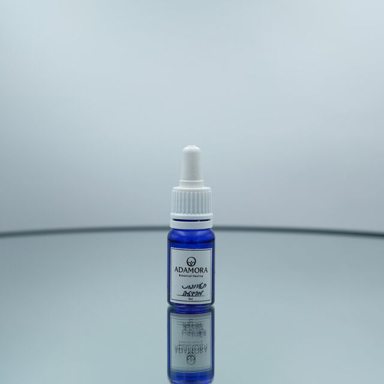
תערובת שמנים אתריים טהורים למבער – לטיפול, מדיטציה, יוגה, הרפיה וכניסה לשינה רגועה.
*השימוש הישיר על הגוף אסור בהחלט* *השימוש במבער שמנים אסור בקרב פעוטות עד גיל שנה*
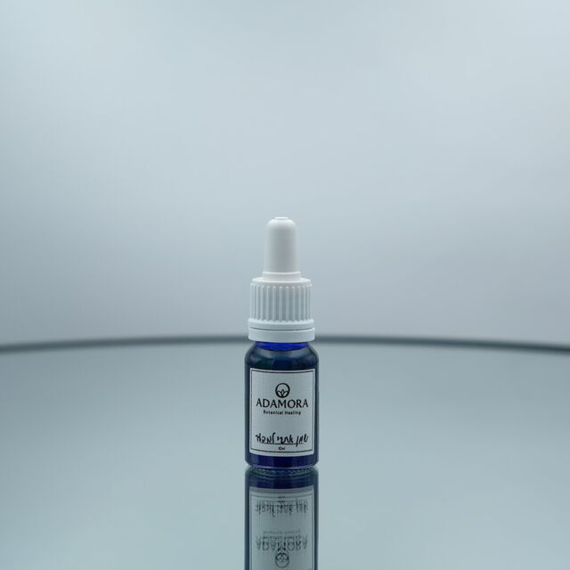
בקבוקון שמן אתרי טהור למבער, לבחירה מבין ארבעה – לבנדר, תפוז מתוק, ארז אטלס, גרניום.
לשימוש במבער שמנים בלבד. *השימוש הישיר על הגוף אסור בהחלט* *מומלץ לא להשתמש במבער שמנים בקרב תינוקות ופעוטות*
כותבות לי בוואטסאפ איזה מוצר או ערכה מעניינים אתכן. אני מתאימה, רוקחת אם צריך, ושולחות או אוספות מהקליניקה — כפי שנוח לכן.
חלק מהמוצרים — קרם פנים, קרם ידיים, מלח הרחה ופרחי באך — נרקחים לפי מה שאתן צריכות, אחרי שיחה טלפונית קצרה. פרחי באך דורשים חידוש והתאמה בכל שלושה–ארבעה שבועות.
רוב המוצרים מתאימים לכולם. לכל מוצר כתוב בפירוט למי הוא מתאים ולמי לא — למשל משחת קלנדולה מתאימה גם לתינוקות, ושמנים למבער לא לפעוטות עד גיל שנה.
כן. משלוח ב-UPS לנקודת מסירה או עד הבית — את העלות נסגור בהודעה. אפשר גם לתאם איסוף עצמי ברמת גן או בעמק האלה.
כמה מוצרים שעובדים יחד, לנושא אחד.
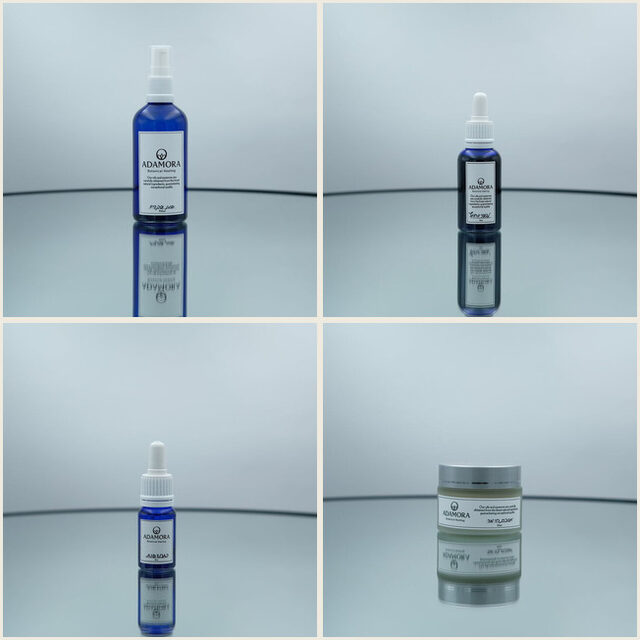
כל מה שצריך לטיפוח וטיפול יומיומי בעור עם אקנה, בשגרה של בוקר וערב.
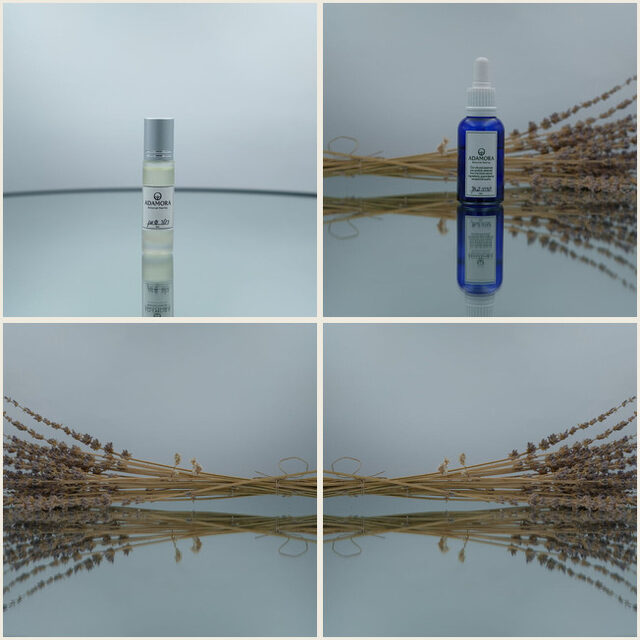
שלושה פריטים לשקט בראש ולמרחב נינוח: ריח, מגע ותמצית.
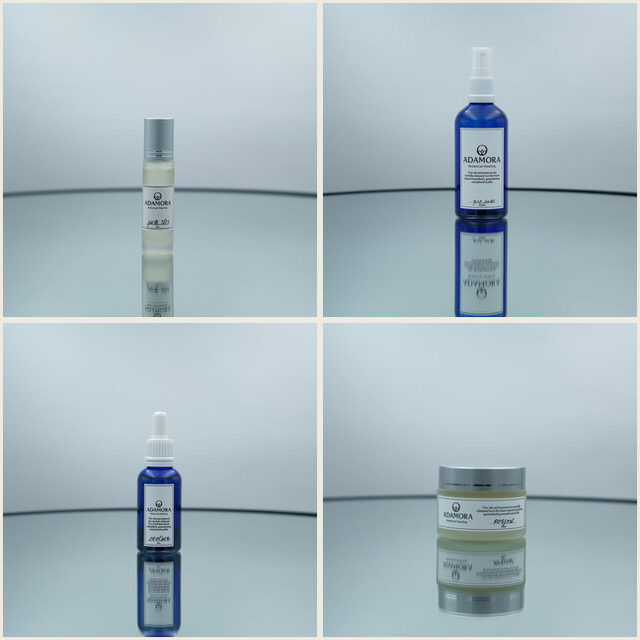
לחיבור גוף־נפש מיטיב בכל חודש מחדש: איזון, הזנה והקלה בימי הכאב.
מארז שנרקח לרגע מסוים — לכלה, להיריון וללידה, לשינה טובה, או לטקס טיפוח.
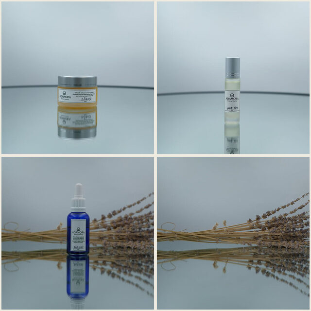
לקראת היום המרגש שלך, רקחנו עבורך מארז טבעי ומפנק במיוחד שיעטוף אותך ברוגע, באהבה ובאנרגיות טובות.
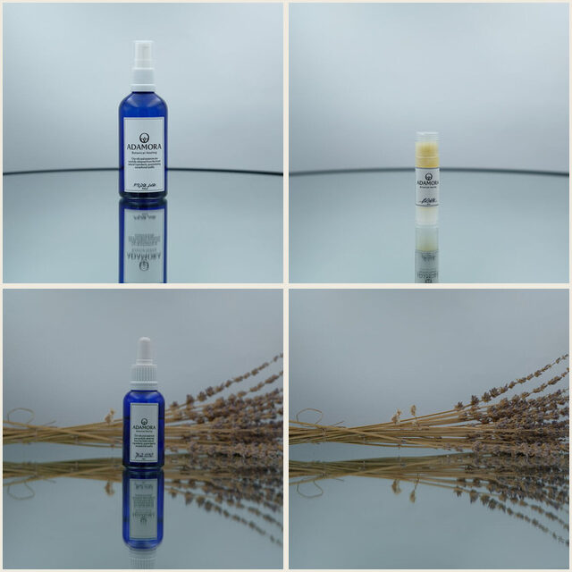
מארז טבעי שנרקח במיוחד כדי לתמוך בך, לחזק ולהרגיע את הגוף והנפש לקראת הלידה ובימים שאחריה.
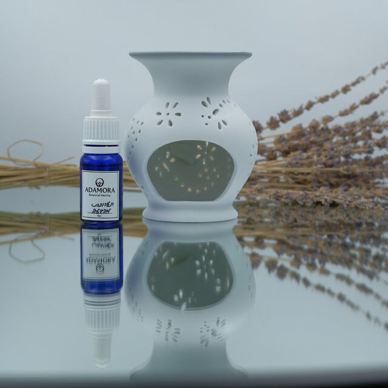
טקס שינה טבעי ומפנק, שנועד להרפות את הגוף, להשקיט את המחשבות ולעטוף אותך לקראת שינה עמוקה ואיכותית.
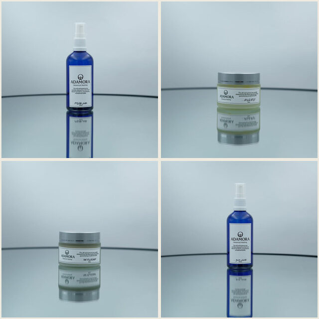
שגרת הטיפוח הטבעית שלך, עם רכיבים טהורים המזינים את העור, מחיים אותו ומעניקים לו זוהר טבעי מבפנים ומבחוץ.
כתבי לי מה את מחפשת — להרגעה, לשינה, לעור, לריח בבית — ואני מתאימה לך.
לוואטסאפ